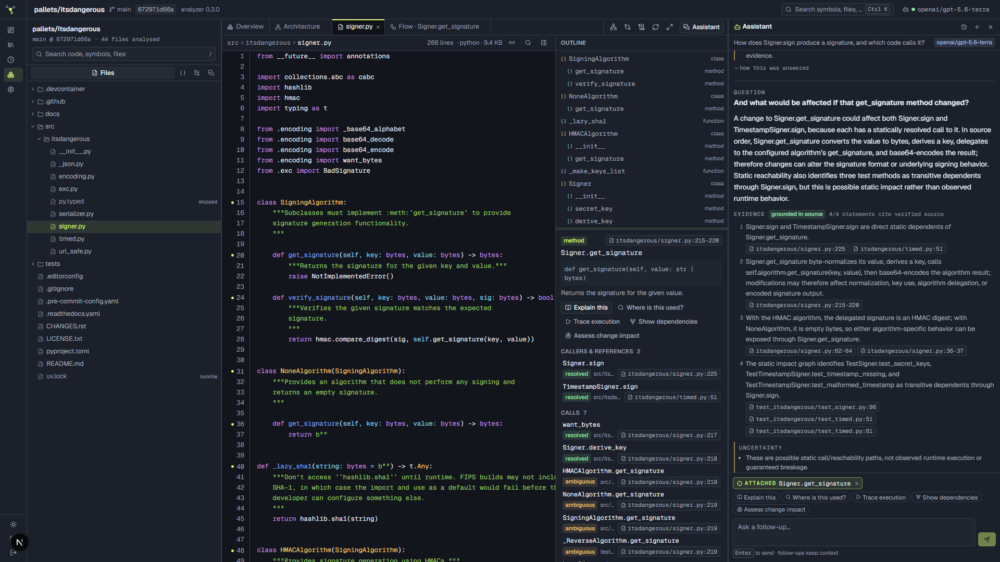
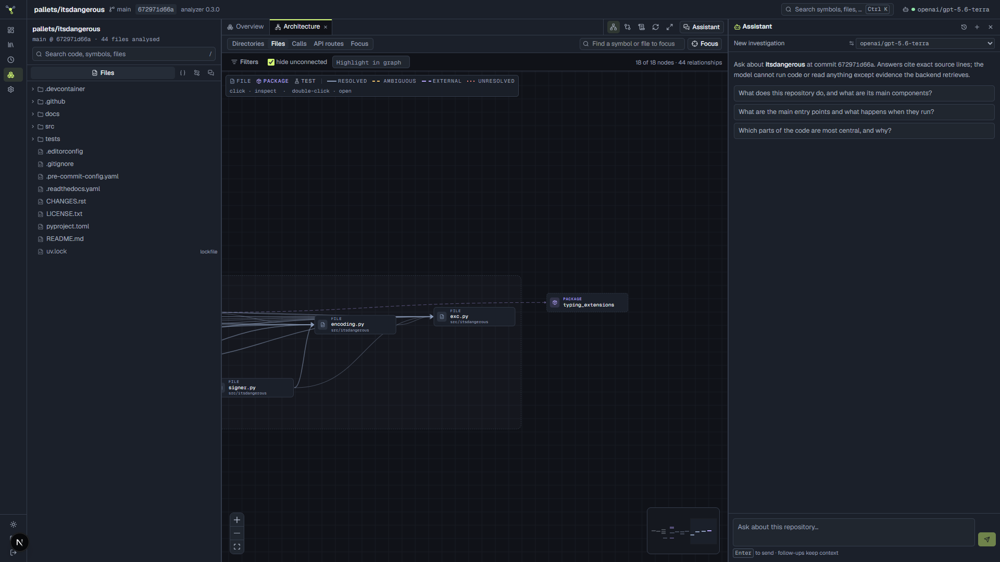
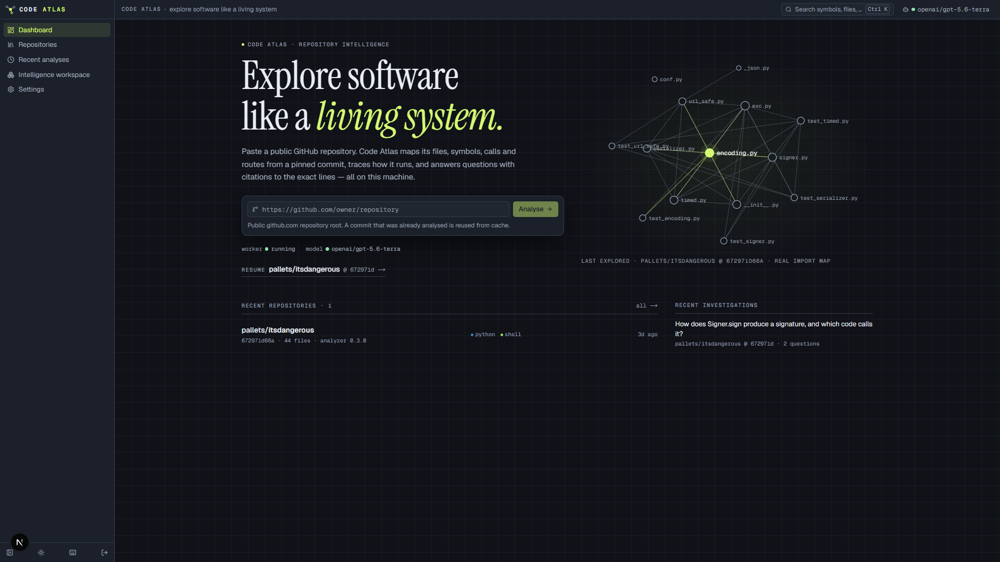

Paste a public GitHub repository. Code Atlas pins the exact commit, maps its files, symbols, calls and routes,
traces how it runs and what a change could reach — and answers your questions with citations to the exact lines.
Everything runs on your machine.
Real analysis of pallets/itsdangerous — a selected node lights its relationships and opens its evidence.
1.000relationship precision on both benchmark fixtures
24 / 24relationships on the held-out fixture
574 / 574evidence records re-verified on itsdangerous
230+automated tests incl. browser + accessibility
01 · the instrument
Three surfaces, one place to think.
The workspace keeps the repository, the thing you are studying and your questions side by side — so context is never lost while you move between code, graphs and answers.
A
Repository explorer
Search across code, symbols and files; browse the tree, the most-used symbols, entry points and routes, and your saved investigations.
B
Intelligence canvas
Tabs for the overview, source, a symbol’s usage and change impact, the architecture graph, execution flows, the report and snapshot comparison. Every tab is a deep link.
C
Investigation assistant
Ask about whatever you are looking at. The selected symbol travels with the question, and every answer is a short document whose statements cite verified lines.
source · assistant

02 · what it can do
From a URL to an explorable map.
A living architecture graph
ELK-laid-out directories, files and call graphs with collapsible groups and a glyph for every kind of node. Select a node and its relationships light up while the camera glides to it; open its source and come back to exactly the same view.

Execution flows
Trace possible paths from routes, mains or any function — step by step, with each call site cited and dynamic dispatch marked as possible.
Change impact
What could be affected if this changes? Direct and transitive dependents, reachable routes and the tests that exercise it — labelled as potential, never guessed.
Answers with citations
Multi-turn questions through OpenCode. The model has no tools; the backend retrieves evidence, and every cited line is re-verified before you see it.
Snapshot comparison
Each analysis is pinned to a commit SHA and an analyzer version. Compare two snapshots: files, symbols, routes, dependencies and relationships that changed.
Deep static analysis
Re-exports, inheritance and method lookup, override-aware dispatch, constructor, return and attribute types; FastAPI, Flask, Django, Express, Next.js, Gin, net/http and Spring routes.
03 · evidence first
Every statement points at code.
Facts are stored as evidence records — path, line range, commit and a hash of the exact lines. Claims carry a basis you can see, and anything that cannot be verified is marked, not hidden.
source cites implementation or test code
config cites manifests or configuration only
docs claim documentation only — code not checked
unsupported no valid evidence — struck through
question
What does this method return, and how is the separator used?
◎ about Signer.sign
Signer.sign returns the byte-normalised input, followed by the configured separator, followed by that input’s signature — the separator delimits the value from its signature.
1
Converts its argument with want_bytes, then returns value + self.sep + self.get_signature(value). signer.py:222-225
2
Tests show a signed value validates and unsigns to the original payload. test_signer.py
grounded in source · openai/gpt-5.6-terra · 1 model call
04 · how it works
Four steps, no surprises.
01
Acquire safely
A shallow, hardened clone of the exact commit: no hooks, submodules or LFS; git runs inside a Windows Job Object with memory and process limits.
02
Map statically
Tree-sitter and Python’s ast turn source into symbols, imports, calls, inheritance, routes and dependencies — resolved across files.
03
Verify evidence
Every fact becomes an evidence record checked against the snapshot on disk; incremental refresh re-parses only what changed.
04
Explore & ask
Graphs, flows, impact and comparison in the browser; questions answered by a tool-less model from evidence the backend chooses.
05 · gallery
Captured from a real instance.
No mock-ups: every image is the running application analysing pallets/itsdangerous.
start

06 · boundaries
Honest about what it guarantees.
Enforced
Repository code is never executed; manifests are parsed declaratively.
The model calls a tool-less endpoint; reads go through a read-only, budgeted gateway.
Every cited evidence ID is re-verified against the commit on disk.